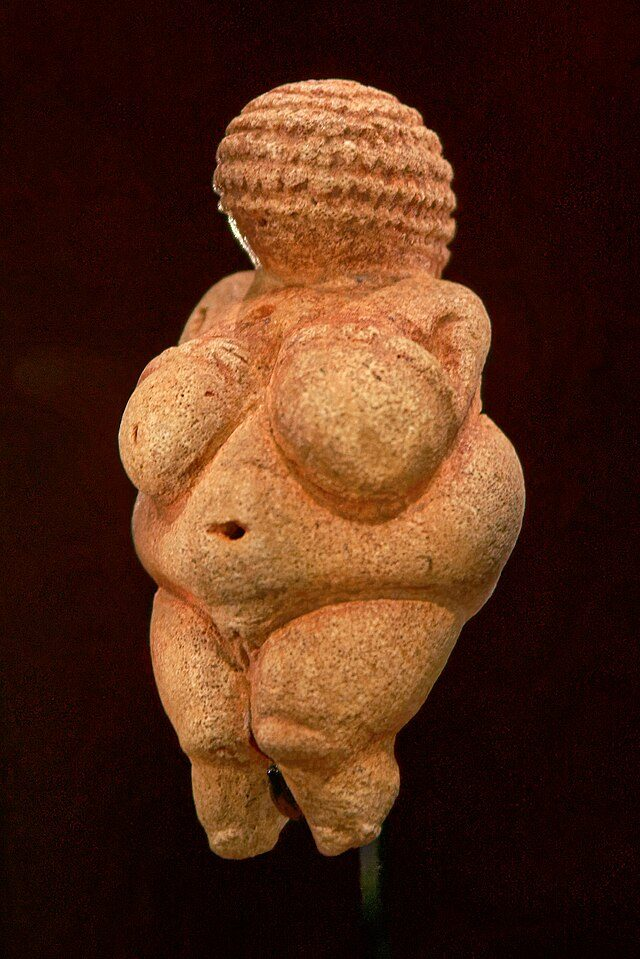
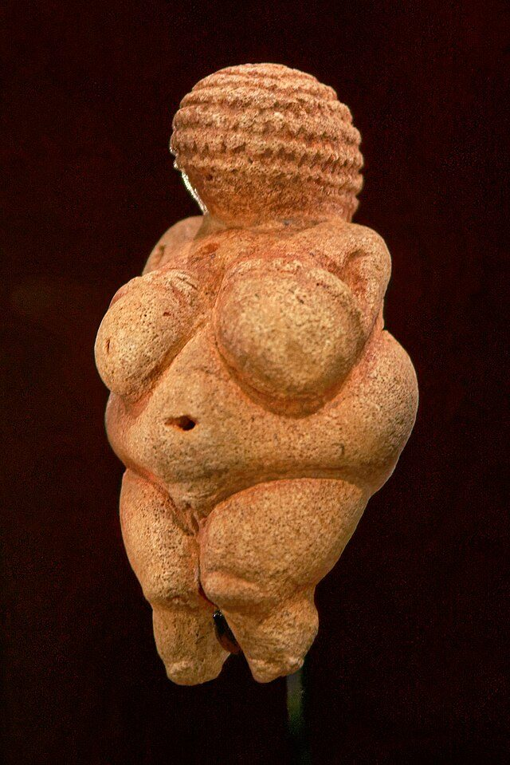
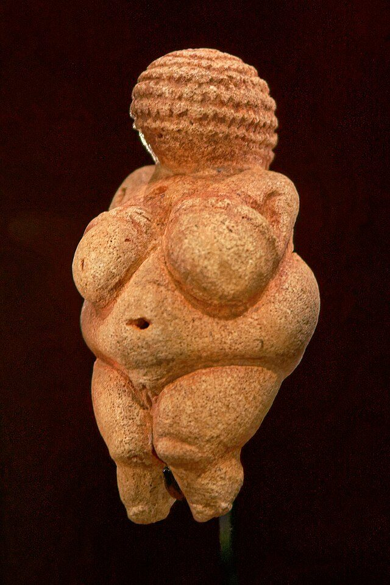

 - A Pré-História é o período da história humana que se estende desde o surgimento dos primeiros hominídeos até a invenção da escrita. Esse período é caracterizado pela ausência de registros escritos e é dividido em três fases: Paleolítico, Mesolítico e Neolítico.
- O Paleolítico, ou Idade da Pedra Lascada, é o período mais longo da história humana, abrangendo desde o surgimento dos primeiros hominídeos até cerca de 10.000 a.C. Durante essa época, os seres humanos eram nômades e viviam da caça, pesca e coleta de frutos.
- O Mesolítico, ou Idade da Pedra Média, é um período de transição entre o Paleolítico e o Neolítico, ocorrendo aproximadamente entre 10.000 a.C. e 8.000 a.C. Durante o Mesolítico, as mudanças climáticas levaram ao surgimento de novos ambientes e à adaptação dos seres humanos a esses espaços.
- O Neolítico, ou Idade da Pedra Polida, é o período que se estende de cerca de 8.000 a.C. até a invenção da escrita, por volta de 3.500 a.C. Durante o Neolítico, os seres humanos começaram a praticar a agricultura e a domesticar animais, levando ao surgimento de comunidades sedentárias.
- A arte pré-histórica é um testemunho da criatividade humana e pode ser encontrada em diversas formas, como pinturas rupestres, esculturas e objetos decorativos. Essas manifestações artísticas refletem as crenças, valores e modos de vida das sociedades da época.
